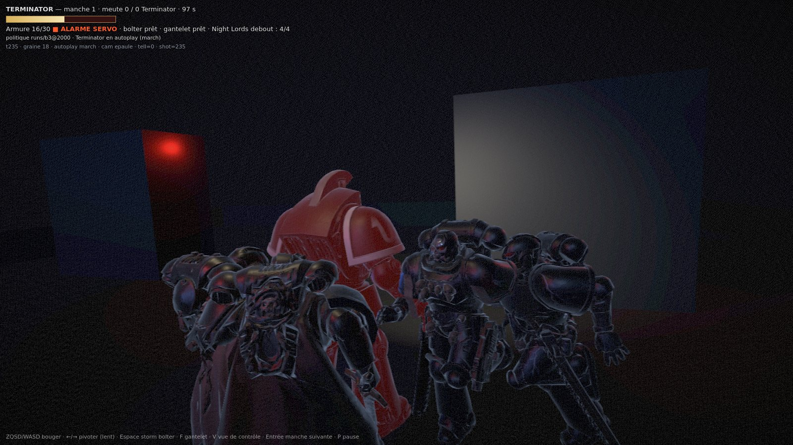
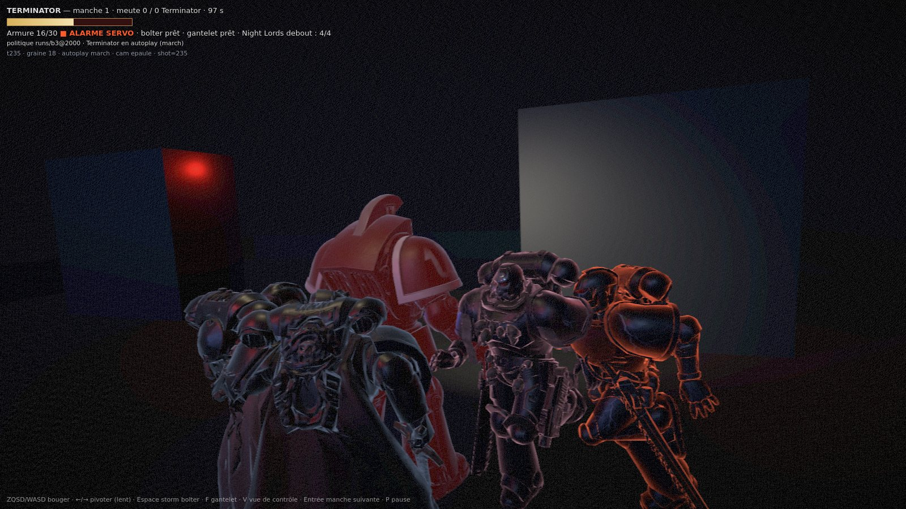

Graine 18 (?seed=18 — l'URL dit ce qu'elle joue depuis le correctif), ?autoplay=march, tick 235 — Night Lord n°2 à 2,26 m, armTicks = 1, deux autres au contact. Capture réelle : aucune mise en scène.
Le tick, la graine et le mode sont brûlés dans l'image (dernière ligne du HUD) : une planche se vérifie sans sa légende.

?tell=0 — sans télégraphe. Les trois assaillants sont des masses noires équivalentes.
| blocs de 8 px, image entière | écart moyen | blocs > 2 | blocs > 8 | blocs > 16 | max |
|---|---|---|---|---|---|
| télégraphe (ces deux images) | +0,58/255 | 14,4 % | 3,0 % | 0,4 % | +24,6 |
| plancher de grain (même URL deux fois) | 0,00/255 | 5,4 % | 0,0 % | 0,0 % | +5,7 à +15,5 |
Le seuil qui compte est > 8 : le grain n'y passe jamais, sur deux répétitions. La valeur maximale, elle, ne dit rien — la queue du grain monte à +15, et un maximum isolé n'est pas une mesure.
Correction, deux fois : cette planche annonçait « graine 17 » (faux, la graine jouée était 18), puis `?seed=18` ne jouait pas 18 non plus — `startRound()` incrémentait dès la première manche. Le contrat d'URL est corrigé : `?seed=N` joue N, et les images ci-dessus sont refaites avec l'URL qui figure en légende.